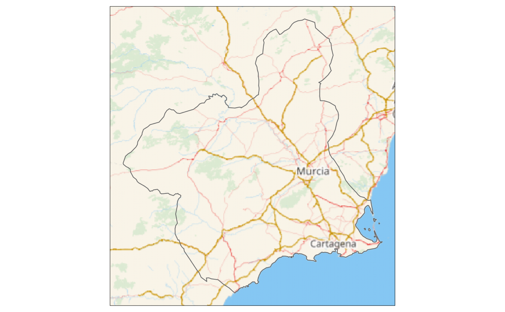

Get static map tiles based on a spatial object. Maps can be fetched from various open map servers.
This function is a implementation of the javascript plugin leaflet-providersESP v1.2.0.
esp_getTiles(
x,
type = "IDErioja",
zoom = NULL,
zoommin = 0,
crop = TRUE,
res = 512,
bbox_expand = 0.05,
transparent = TRUE,
mask = FALSE,
update_cache = FALSE,
cache_dir = NULL,
verbose = FALSE
)Source
https://dieghernan.github.io/leaflet-providersESP/ leaflet plugin, v1.2.0.
Arguments
- x
An
sforsfcobject.- type
Name of the provider. See leaflet.providersESP.df.
- zoom
Zoom level. If
NULL, it is determined automatically. If set, it overrideszoommin. Only valid for WMTS tiles. On a single point it applies a buffer to the point and onzoom = NULLthe function set a zoom level of 18. See Details.- zoommin
Delta on default
zoom. The default value is designed to download fewer tiles than you probably want. Use1or2to increase the resolution.- crop
TRUEif results should be cropped to the specifiedxextent,FALSEotherwise. Ifxis ansfobject with onePOINT, crop is set toFALSE.- res
Resolution (in pixels) of the final tile. Only valid for WMS.
- bbox_expand
A numeric value that indicates the expansion percentage of the bounding box of
x.- transparent
Logical. Provides transparent background, if supported. Depends on the selected provider on
type.- mask
TRUEif the result should be masked tox.- update_cache
A logical whether to update cache. Default is
FALSE. When set toTRUEit would force a fresh download of the source file.- cache_dir
A path to a cache directory. See About caching.
- verbose
Logical, displays information. Useful for debugging, default is
FALSE.
Value
A SpatRaster is returned, with 3 (RGB) or 4 (RGBA) layers, depending on
the provider. See terra::rast().
.
Details
Zoom levels are described on the OpenStreetMap wiki:
| zoom | area to represent |
| 0 | whole world |
| 3 | large country |
| 5 | state |
| 8 | county |
| 10 | metropolitan area |
| 11 | city |
| 13 | village or suburb |
| 16 | streets |
| 18 | some buildings, trees |
For a complete list of providers see leaflet.providersESP.df.
Most WMS/WMTS providers provide tiles on "EPSG:3857". In case that the tile
looks deformed, try projecting first x:
x <- sf::st_transform(x, 3857)
About caching
You can set your cache_dir with esp_set_cache_dir().
Sometimes cached files may be corrupt. On that case, try re-downloading
the data setting update_cache = TRUE.
If you experience any problem on download, try to download the
corresponding .geojson file by any other method and save it on your
cache_dir. Use the option verbose = TRUE for debugging the API query.
See also
Other imagery utilities:
addProviderEspTiles(),
layer_spatraster(),
leaflet.providersESP.df
Examples
# \dontrun{
# This script downloads tiles to your local machine
# Run only if you are online
Murcia <- esp_get_ccaa_siane("Murcia", epsg = 3857)
Tile <- esp_getTiles(Murcia)
library(ggplot2)
ggplot(Murcia) +
layer_spatraster(Tile) +
geom_sf(fill = NA)
#> Warning: Discarded ellps WGS 84 in Proj4 definition: +proj=merc +a=6378137 +b=6378137 +lat_ts=0 +lon_0=0 +x_0=0 +y_0=0 +k=1 +units=m +nadgrids=@null +wktext +no_defs +type=crs
#> Warning: Discarded datum World Geodetic System 1984 in Proj4 definition

# }